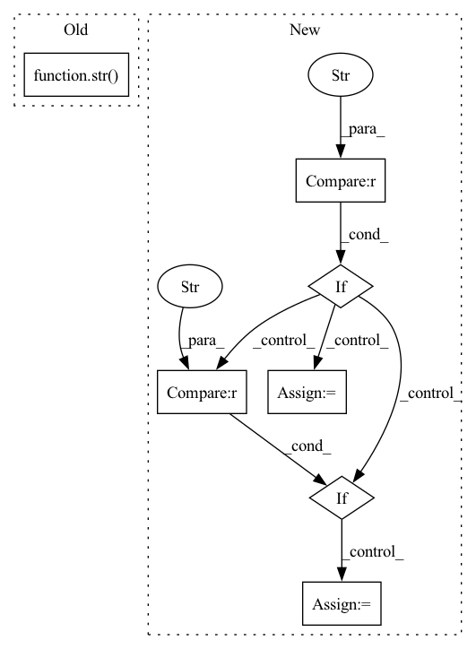

Pattern ID :4752

Before Change
def atom_vocab(smiles: str) -> List[str]:
return [str(atom.GetAtomicNum()) for atom in Chem.MolFromSmiles(smiles).GetAtoms()]
def atom_features_vocab(smiles: str) -> List[str]:
After Change
def atom_vocab(smiles: str, vocab_func: str, nb_info: bool=False) -> List[str]:
if vocab_func == "atom":
featurizer = lambda x: x.GetAtomicNum()
elif vocab_func == "atom_features":
featurizer = atom_features
all_atoms = Chem.MolFromSmiles(smiles).GetAtoms()
features = [str(featurizer(atom)) for atom in all_atoms]
if nb_info:
In pattern: SUPERPATTERN
Frequency: 3
Non-data size: 7
Instances
Fragment ID: 16827521
Project Name: aamini/chemprop
Commit Name: aab44e510498fd3906a30e7e658857d9d35ea1df
Time: 2018-12-18
Author: yangk@mit.edu
File Name: chemprop/data/vocab.py
M Class Name: AnonimousClass
N Class Name: AnonimousClass
M Method Name: atom_vocab(3)
N Method Name: atom_vocab(1)
M Parent Class:
N Parent Class:
M File Name: chemprop/data/vocab.py
N File Name: chemprop/data/vocab.py
M Start Line: 30
M End Line: 31
N Start Line: 32
N End Line: 47
'>
Before Change
compression_fs_class, gz_file, xz_file, zstd_file, bz2_file, lz4_file, text_file
):
input_paths = {"gzip": gz_file, "xz": xz_file, "zstd": zstd_file, "bz2": bz2_file, "lz4": lz4_file}
input_path = str(input_paths[compression_fs_class.protocol])
dl_manager = StreamingDownloadManager()
output_path = dl_manager.extract(input_path)
path = os.path.basename(input_path)
path = path[: path.rindex(".")]
After Change
input_path = input_paths[compression_fs_class.protocol]
if input_path is None:
reason = f"for "{compression_fs_class.protocol}" compression protocol, "
if compression_fs_class.protocol == "lz4":
reason += require_lz4.kwargs["reason"]
elif compression_fs_class.protocol == "zstd":
reason += require_zstandard.kwargs["reason"]
pytest.skip(reason)
input_path = str(input_path)
dl_manager = StreamingDownloadManager()
'>
Fragment ID: 16827512
Project Name: huggingface/datasets
Commit Name: 48390622c7f5d12c92b46b1cddadd421bc9a4f0c
Time: 2022-07-19
Author: 8515462+albertvillanova@users.noreply.github.com
File Name: tests/test_streaming_download_manager.py
M Class Name: AnonimousClass
N Class Name: AnonimousClass
M Method Name: test_streaming_dl_manager_extract_all_supported_single_file_compression_types(7)
N Method Name: test_streaming_dl_manager_extract_all_supported_single_file_compression_types(7)
M Parent Class:
N Parent Class:
M File Name: tests/test_streaming_download_manager.py
N File Name: tests/test_streaming_download_manager.py
M Start Line: 695
M End Line: 696
N Start Line: 693
N End Line: 702
'>
Before Change
@pytest.mark.parametrize("compression_fs_class", COMPRESSION_FILESYSTEMS)
def test_compression_filesystems(compression_fs_class, gz_file, bz2_file, lz4_file, zstd_file, xz_file, text_file):
input_paths = {"gzip": gz_file, "xz": xz_file, "zstd": zstd_file, "bz2": bz2_file, "lz4": lz4_file}
input_path = str(input_paths[compression_fs_class.protocol])
fs = fsspec.filesystem(compression_fs_class.protocol, fo=input_path)
assert isinstance(fs, compression_fs_class)
expected_filename = os.path.basename(input_path)
expected_filename = expected_filename[: expected_filename.rindex(".")]
After Change
input_path = input_paths[compression_fs_class.protocol]
if input_path is None:
reason = f"for "{compression_fs_class.protocol}" compression protocol, "
if compression_fs_class.protocol == "lz4":
reason += require_lz4.kwargs["reason"]
elif compression_fs_class.protocol == "zstd":
reason += require_zstandard.kwargs["reason"]
pytest.skip(reason)
input_path = str(input_path)
fs = fsspec.filesystem(compression_fs_class.protocol, fo=input_path)
'>
Fragment ID: 16827501
Project Name: huggingface/datasets
Commit Name: 48390622c7f5d12c92b46b1cddadd421bc9a4f0c
Time: 2022-07-19
Author: 8515462+albertvillanova@users.noreply.github.com
File Name: tests/test_filesystem.py
M Class Name: AnonimousClass
N Class Name: AnonimousClass
M Method Name: test_compression_filesystems(7)
N Method Name: test_compression_filesystems(7)
M Parent Class:
N Parent Class:
M File Name: tests/test_filesystem.py
N File Name: tests/test_filesystem.py
M Start Line: 67
M End Line: 68
N Start Line: 65
N End Line: 74